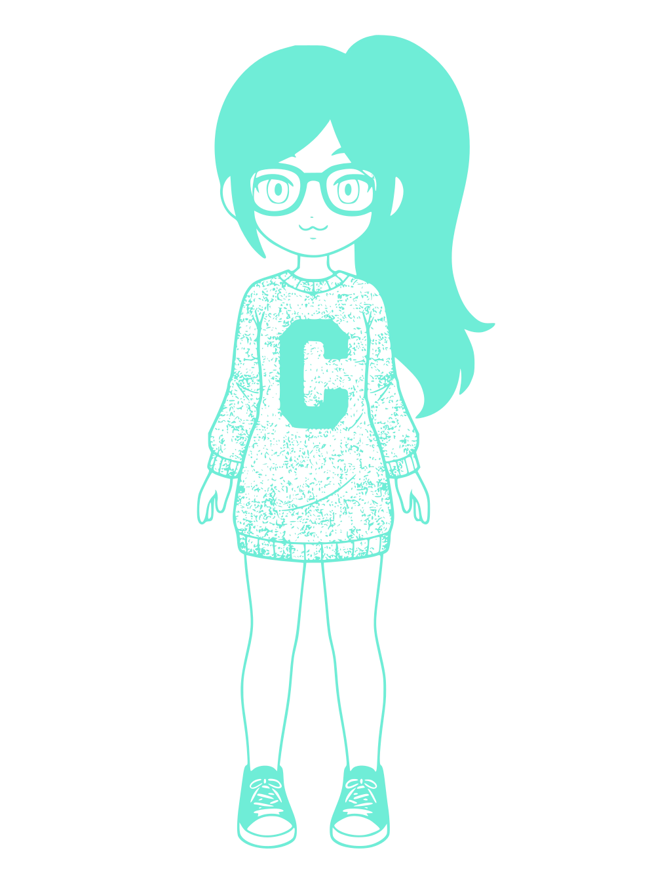
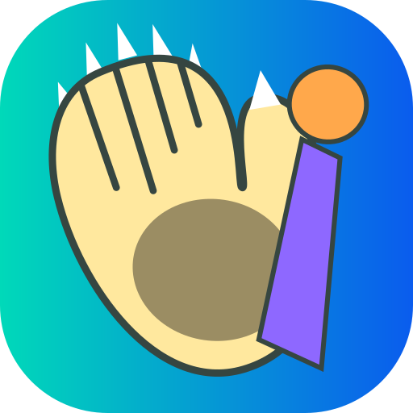
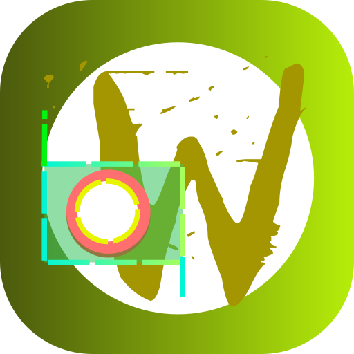
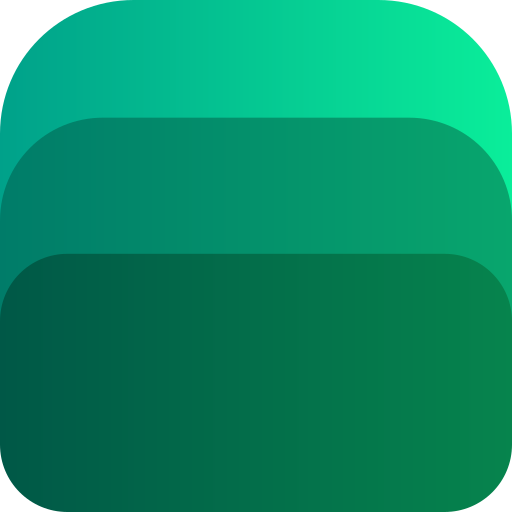
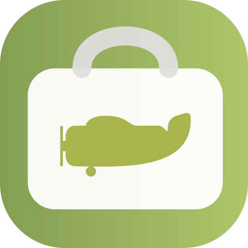

Tecnico en computacion, redes y mantenimiento. Desarrollador en CuerdOS GNU/Linux — construyendo herramientas del sistema con Qt 6, Python 3 y C/C++.

Aplicaciones del ecosistema construidas con Qt 6, Python 3, C/C++ y GTK 3.

Pantalla de bienvenida para CuerdOS. Primer contacto visual del sistema con el usuario.

Grabador de pantalla nativo para Wayland. Captura de video fluida del escritorio CuerdOS.
Reproductor multimedia construido con GTK 3 y Python 3.
Gestor de actualizaciones del sistema. Mantiene CuerdOS actualizado de forma automatica y segura.

Instalador de paquetes de CuerdOS. Gestion, instalacion y eliminacion de software.
Monitor de informacion del sistema. Muestra en tiempo real datos de hardware y rendimiento.

Tienda de aplicaciones de CuerdOS. Catalogo centralizado para descubrir e instalar software.
Grabadora de audio y sonidos para CuerdOS. Captura de audio del sistema y microfono.
Perfil multidisciplinario que abarca desde el hardware hasta la produccion multimedia.
Soy Leo H. Perez, de Honduras. Tecnico multidisciplinario con experiencia en computacion, redes, mantenimiento de hardware, diseno grafico y vectorial, edicion de video, desarrollo UX, fotografia, videografia, produccion multimedia e investigacion. Tambien soy tecnico en identificacion erronea.
Programo en Qt 6, Python 3, C/C++, procesadores de estilo CSS/JS (40%), R y Ensamblador.
Soy desarrollador y colaborador de CuerdOS GNU/Linux, donde construyo aplicaciones del ecosistema: el gestor de actualizaciones (CuerdToken), el instalador de paquetes (Debbie), el monitor de sistema (Eclair), la tienda de aplicaciones (Yelena Store), la grabadora de audio (CuerdRec), la pantalla de bienvenida (K-Hello) y el grabador de pantalla para Wayland (SnapWay). Tambien desarrolle Wasabi Media Player con GTK 3 y Python 3, y he colaborado en ConkyMan.
Carrera universitaria en progreso, complementando mi perfil tecnico con fundamentos de ingenieria.
Desarrollo de aplicaciones con Qt 6, Python 3 y C/C++: CuerdToken, Debbie, Eclair, Yelena Store, CuerdRec, K-Hello, SnapWay. Wasabi Media Player con GTK 3 y Python 3. Colaboracion en ConkyMan.
Formacion tecnica en informatica, base de mis conocimientos en computacion, redes y programacion.
Tecnico en computacion, redes y mantenimiento de equipos portatiles. Disenador grafico, vectorial y de contenido. Editor de video. Desarrollador de UX. Fotografo, videografo y productor multimedia. Tecnico en identificacion erronea. Experiencia en organizacion y gestion de proyectos.
Quieres colaborar en CuerdOS, comentar sobre algun proyecto o simplemente charlar? Encuentrame en estas plataformas.